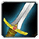
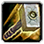
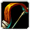
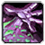
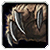
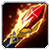
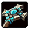
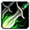

Généralités
Guides de Classes

Guerrier
Tank ou DPS, maîtrise de la rage et des postures.

Paladin
Support sacré, tank ou DPS vengeur.

Chaman
Tank ou DPS, maîtrise de la rage et des postures.

Chasseur
Tank ou DPS, maîtrise de la rage et des postures.

Démoniste
Support sacré, tank ou DPS vengeur.

Druide
Tank ou DPS, maîtrise de la rage et des postures.

Mage
Support sacré, tank ou DPS vengeur.

Prêtre
Tank ou DPS, maîtrise de la rage et des postures.

Voleur
Support sacré, tank ou DPS vengeur.
Raids et Stratégies
- Karazhan
- Zul'Aman
- Le repaire de Gruul
- Le repaire de Magthéridon
- Caverne du sanctuaire du Serpent
- L'oeil du cyclone
- Le sommet d'Hyjal
- Le temple noir
- Le plateau du puit de soleil